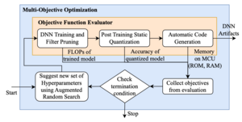
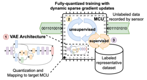
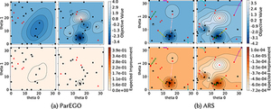
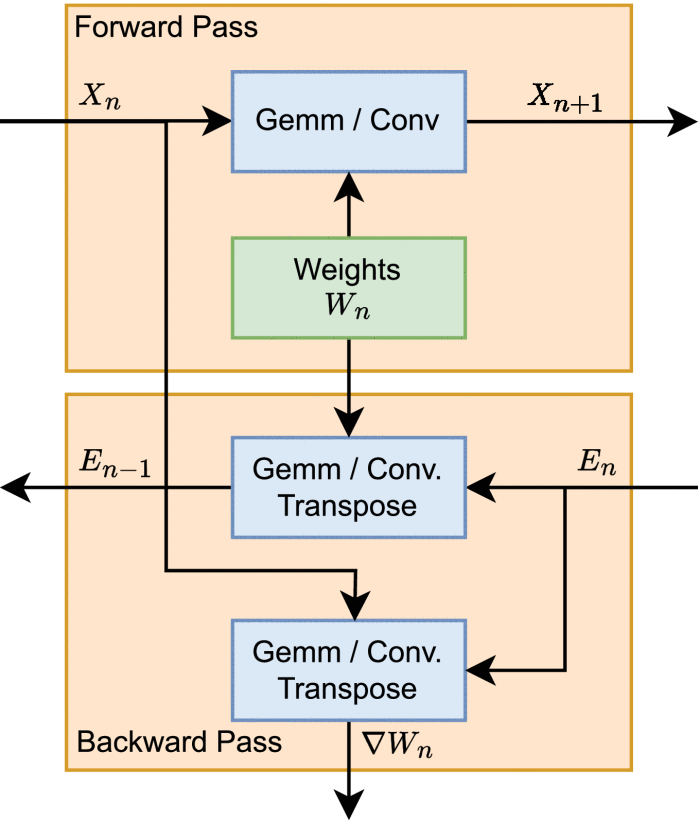
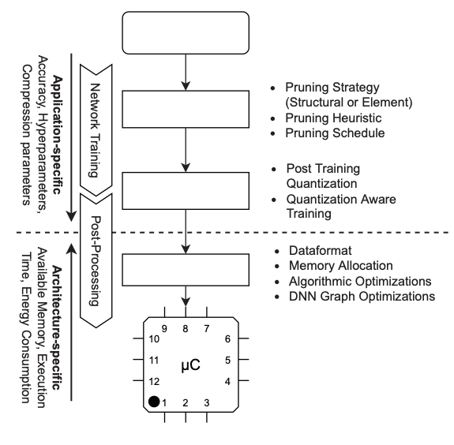
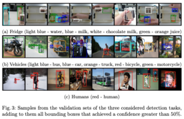

Mark Deutel is a computer scientist pursuing his PhD at Friedrich-Alexander-Universität Erlangen-Nürnberg (FAU) at the chair of Hardware-Software-Co-Design. He is also affiliated with the Fraunhofer Institute for Integrated Circuits IIS in Nuremberg, where he is a scientific researcher in the Efficient AI group. His work focuses on the efficient design of deep neural networks (DNNs) for use on embedded edge devices, mainly Cortex-M microcontroller units (MCUs). Since MCUs are generally resource-constrained, his main research interest is to optimize the trade-off between a DNN's resource requirements and its accuracy. This includes hardware-aware neural architecture search (NAS), DNN pruning, quantization, and efficient programming techniques. Recently, he has also added on-device training of fully quantized DNNs on MCUs to his list of interests.
Publications

Multi-Objective Bayesian Optimization with Reinforcement Learning for Edge Deployment of DNNs on Microcontrollers
We present a novel NAS strategy for edge deployment using multi-objective Bayesian optimization (MOBOpt) and reinforcement learning (RL).

Unsupervised Learning of Variational Autoencoders on Cortex-M Microcontrollers
We explore variational autoencoders as a way to train unsupervised, i.e., without labels, feature extractors for image classification on a Cortex-M MCU. Using these feature extractors, we then train classification heads using small labeled representative sets of data to solve classification tasks. Our approach significantly reduces the amount of labeled data required, while enabling full DNN training from scratch on resource-constrained devices.

Combining Multi-Objective Bayesian Optimization with Reinforcement Learning for TinyML
We propose a novel NAS strategy for TinyML based on multi-objective Bayesian optimization (MOBOpt) and an ensemble of competing parametric policies trained using augmented random search (ARS) reinforcement learning (RL) agents. Our methodology aims at efficiently finding tradeoffs between a DNN’s predictive accuracy, memory requirements on a given target system, and computational complexity. Our experiments show that we consistently outperform existing MOBOpt approaches on different datasets and architectures such as ResNet-18 and MobileNetv3.

On-Device Training of Fully Quantized Deep Neural Networks on Cortex-M Microcontrollers
We present a method that enables efficient training of DNNs completely in place on the MCU using fully quantized training (FQT) and dynamic partial gradient updates. We demonstrate the feasibility of our approach on multiple vision and time-series datasets and provide insights into the tradeoff between training accuracy, memory overhead, energy, and latency on real hardware. The results show that compared to related work, our approach requires 34.8% less memory and has a 49.0% lower latency per training sample, with dynamic partial gradient updates allowing a speedup of up to 8.7 compared to fully updating all weights.

Energy-Efficient Deployment of Deep Learning Applications on Cortex-M based Microcontrollers using Deep Compression
We present a methodology for systematically exploring different DNN pruning, quantization, and deployment strategies for different microcontroller architectures, with a focus on lowpower ARM Cortex-M-based systems. The exploration allows to analyze trade-offs between key metrics such as accuracy, memory consumption, execution time, and power consumption. We discuss experimental results on three different DNN architectures and show that we can compress them to less than 10% of their original parameter count before their prediction quality degrades.

uYOLO: Towards Single-Shot Object Detection on Microcontrollers
This work-in-progress paper presents results on the feasibility of single-shot object detection on microcontrollers using YOLO. Single-shot object detectors like YOLO are widely used, however due to their complexity mainly on larger GPU-based platforms. We present YOLO, which can be used on Cortex-M based microcontrollers, such as the OpenMV H7 R2, achieving about 3.5 FPS when classifying 128128 RGB images while using less than 800 KB Flash and less than 350 KB RAM. Furthermore, we share experimental results for three different object detection tasks, analyzing the accuracy of YOLO on them.